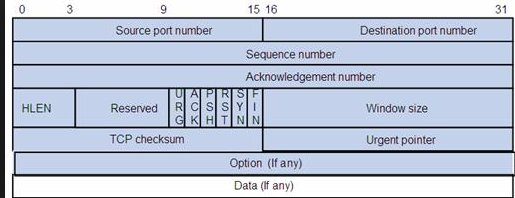

当开发人员说精通TCP/IP时，到底该精通什么
经常看到招聘要求，精通 TCP/IP 。也经常有人自称精通 TCP/IP ，那么精通的标准是什么？我觉得对开发人员来讲，精通至少包含下面这些能力。
1 TCP/IP基本概念和关键系统调用
1.1 TCP packet 的组成

注意：这里仅有源端口和目的端口，并且都是16位的。隐含的意思，1. 路由是IP层的事情，和TCP无关。 2. 端口是有限的，65536个，实际上能用的比这个还要少，什么时候端口会耗尽，端口耗尽怎么办？
1.2 IP header 的组成

这里包含了源IP和目的IP，路由是根据目的IP做的，理解这个才能理解导致UDP放大攻击，SYN-FLOOD攻击，TCP-RESET攻击。
1.3 TCP面向连接 vs UDP无连接
所谓面向连接是说TCP有三次握手，并在握手后保留了对端的IP和端口信息，UDP没有这些，这也是为什么TCP不可用做放大攻击。这个连接是概念上的"连接"，假设A和B之间建立了TCP连接，拔掉A的网线，B并不知道A和它断开了连接，但是A有机会知道。如果B正在调用 recv 又没用设置超时和keepalive，那么B会一直阻塞下去。如果A正在调用 recv ，会不会一直阻塞下去取决于TCP实现。
对TCP而言，连接必须有超时的概念，如果某个连接上一段时间没数据，关闭连接，否则会照成端口泄露。例如：利用 epoll 做多路复用，客户端建立连接，然后网络关闭，此时服务端保留了一个本质上断开的连接，但是它不知道。可以用nc模拟这个情况。 nc -k -l 1234 监听1234端口。 cat <(echo x) - | nc 127.0.0.1 1234 模拟客户端连接。 iptables -I OUTPUT -p tcp --dport 1234 -j REJECT --reject-with tcp-reset iptables模拟断网。然后关闭客户端连接，删除iptables观察，仍处于连接状态。
断网前，两个连接，18912是服务端，30530是客户端
tcp 0 0 127.0.0.1:37160 127.0.0.1:1234 ESTABLISHED 30530/nc tcp 0 0 127.0.0.1:1234 127.0.0.1:37160 ESTABLISHED 18912/nc
断网后客户端退出，然后重新联网，客户端30530的连接不在了，但是服务端18912的连接还在，这个连接其实已经废了。
tcp 0 0 127.0.0.1:1234 127.0.0.1:37160 ESTABLISHED 18912/nc
该测试在rhel6上有效，不排除nc的其它版本修复这个问题。除了超时，还可以使用tcp的keepalive发现异常关闭的连接，keepalive需要连接双方定时发心跳包，确认连接有效，对高性能服务器，这个可能影响性能。
很多攻击都是基于源IP是可以伪造的，路由根据目的IP转发，伪造的请求可以到目标机器。
1.3.1 UDP放大攻击
以 DNS 为例， DNS 的响应数据大概是请求的4倍，发送UDP请求时，把IP头中的源IP，改成被攻击机器的IP。 DNS 服务器把请求返回给被攻击IP。为什么没有 TCP 放大攻击，因为服务器没有被攻击IP的连接信息，返回RST。
1.3.2 TCP-REST攻击
假设A和B之间建立了连接，C请求B，把源IP改成A的IP，发送RESET请求，B断开了A的连接。
1.4 TCP 三次握手
假设A想和B上的80端口建立连接，A发送SYN，B回复ACK SYN，A回复ACK，握手完成。
1.4.1 对比B宕机和B上80端口没起来，那种情况A失败的快？
请求不存在的IP（宕机），发了 SYN 没人回 ACK ，只能超时后重发 SYN 。请求IP上不存在的端口，机器知道自己没这个端口，立即回 RST 。
用nc测试不存在的IP，tcpdump抓包观察 echo 'x' | nc -w 5 1.1.1.1 123 ，设置了5s超时，超时了才失败。
17:43:04.610808 IP 10.146.110.179.59603 > 1.1.1.1.123: Flags [S], seq 1993645787, win 14600, options [mss 1460,nop,wscale 8], length 0 17:43:05.610495 IP 10.146.110.179.59603 > 1.1.1.1.123: Flags [S], seq 1993645787, win 14600, options [mss 1460,nop,wscale 8], length 0 17:43:07.610502 IP 10.146.110.179.59603 > 1.1.1.1.123: Flags [S], seq 1993645787, win 14600, options [mss 1460,nop,wscale 8], length 0
用nc测试不存在的端口，tcpdump抓包观察 echo 'x' | nc -w 5 127.0.0.1 123 ，瞬间失败
17:44:32.135948 IP 127.0.0.1.50188 > 127.0.0.1.123: Flags [S], seq 1866960262, win 65495, options [mss 65495,nop,wscale 8], length 0 17:44:32.135961 IP 127.0.0.1.123 > 127.0.0.1.50188: Flags [R.], seq 0, ack 1866960263, win 0, length 0
1.4.2 设置连接5s超时和3s超时有区别吗？
基本没区别，3s内发重发2次SYN，第3次重发在5s之后了，后2s白等了。
1.5 TCP 关闭连接
这里不区分客户端和服务端，只分主动关闭还是被动关闭，先发FIN的是主动关闭。
1.5.1 主动关闭
调用 close 发送FIN进入 FIN_WAIT_1 状态后，有三种情况：
- 收到ACK，进入
FIN_WAIT_2状态，收到FIN，发送ACK，进入TIME_WAIT状态 - 收到FIN，发送ACK（说明双方同时主动关闭连接），进入
CLOSING，收到ACK，进入TIME_WAIT状态 - 收到FIN ACK，发送ACK，进入
TIME_WAIT
如果发送了FIN，但是对方不调用 close 关闭连接，此时会停在 FIN_WAIT_2 ， net.ipv4.tcp_fin_timeout 控制这个状态的超时时间。
TIME_WAIT 需要等待2MSL（maximum segment lifetime）。网上有很多关于 Too many connections in TIME_WAIT state 问题的讨论，解决方法大致是：通过sysctl调整 tcp_fin_timeout net.ipv4.tcp_tw_reuse ip_local_port_range ，但是我认为 TIME_WAIT 太多是现象，而不是原因。 TIME_WAIT 造成的主要问题是端口耗尽，对于被动连接，根本就没这个问题。对于主动连接，可以使用长连接。
1.5.2 被动关闭
收到FIN，发送ACK进入 CLOSE_WAIT ，调用 close ，发送FIN进入 LAST_ACK ，收到ACK（或等ACK超时），进入 CLOSED
这里，如果进入 CLOSE_WAIT 状态后，因为bug或者逻辑错误，没有调用close，造成端口泄露。
1.6 相关系统调用
服务端 bind 绑定IP和端口， listen 表明自己是被动连接， accept 接受处理建立好的连接， accept 返回前，TCP三次握手已经完成，那是操作系统的事儿。
客户端 connect 主动连接。这里客户端也可以调用 bind 绑定IP端口。
调用 close 主动关闭连接，被动关闭连接的一方，如果 recv 到size为0的数据，或者 send 失败，则明白连接已关闭，此时调用 close 关闭连接。
注意：send 成功不代表对端接受到了数据，因为 send 只是发送到了 TCP 协议栈的buffer中，只有 close 成功才代表数据发送成功。
利用iptables模拟网络问题 iptables -I OUTPUT -p tcp --dport 1234 -j DROP ，通过 strace 观察 send/write 函数的返回值可以观察到这一点。
1.7 端口的选择
端口分三个段
- 0-1024，需要root才能使用
- 1024 - X，普通用户用来作为监听端口
- X - 65000，用来作为临时端口，即主动连接使用的端口
这里X可以通过 net.ipv4.ip_local_port_range 配置，默认X是32768，如果改小了X的值，原有的监听端口可能起不来。有一次把jmx端口配置在19012，但是起不来，提示端口被占用。后来发现X的值被改成1024了，有个临时端口使用了19012，偏偏还有BUG，连接一直处于 CLOSE_WAIT 状态。
1.8 RTT （Round Trip Time）
简单测试：数据中心内 rtt < 0.5ms，BJ数据中心间 rtt < 2ms，BJ和GD数据中心间 10ms < rtt < 100ms。为什么要了解RTT？这对设置超时有意义，数据中心内，理论上设置10ms足够了，自己重新connect，比让TCP重试发第二个SYN要有意义。开发分布式系统时，系统内部也有各种超时。
2 理解是什么是输入
程序的本质是，给定一个输入，捣鼓出一个输出。输入可能来自命令行参数，也可能来自网络，只是来自网络的请求不 显然 。网络程序最关键的是应用层协议，应用层协议有标准的，例如：HTTP，DNS。也有私有的，例如redis，kafka等。当我们要写一个网络程序时，要么用标准协议，例如HTTP，要么自己设计一个协议，例如：头4个字节表明数据长度，后面是JSON格式的数据。
当自己设计协议时，我们清楚的知道，输入是什么（例如：上一个例子是JSON数据）。当用HTTP时，我们就糊涂了。以为HTTP就是一个URL，可能还有POST的数据。这只是HTTP协议重要的部分，但不是全部。HTTP协议还包括HTTP协议的版本，HTTP头。
我曾配置nginx的 proxy_pass 到某个第三方地址，刚开始挺正常的，后来这个地址总是返回503。用curl访问该地址则正常。仔细对比curl和nginx对这个地址的输入，发现curl是 HTTP/1.1 ，nginx 是 HTTP/1.0 ，显然，第三方升级了服务。
协议就是一套沟通语言，要考虑的很多。但不管怎么变，都是输入（往往网络请求和请求关联的后台数据（缓存，数据库）等共同构成输入），把握这个是关键。例如：检测温度的IOT设备定时发送检测到的温度，服务端用简单的程序接受数据。后来IOT设备升级，数量可能达到上百万，自己写的小程序肯定顶不住了，也得升级。这时得用多进程啦，epoll啦等高级技术了。如果IOT设备有能力，把发送 10 改成发送 GET /10 HTTP/1.1\nHost:x\n\n ，就回到了标准协议的路上。显然这里HTTP协议的有效负载很低，但是IOT设备发送温度时，可能还要发送它的编号等，问题不是很突出。